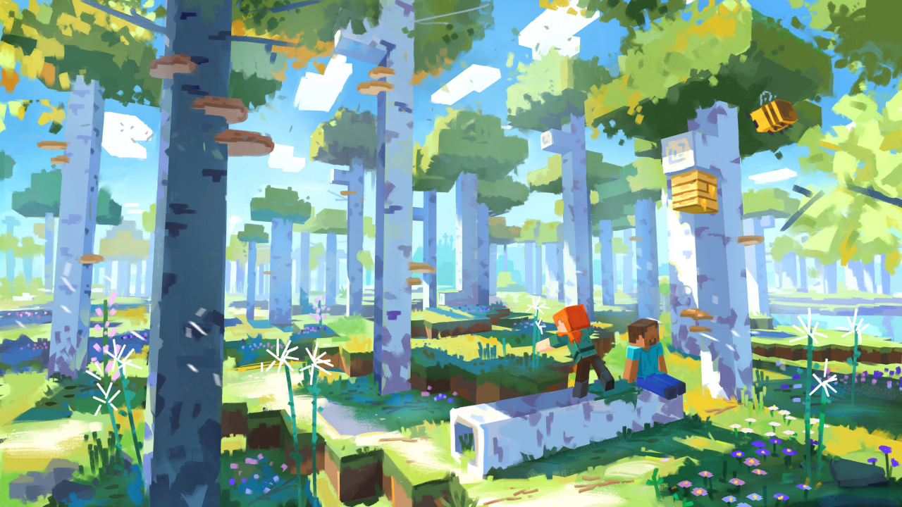

Детальіше про гру
Minecraft — відеогра від незалежної студії Mojang 2011 року жанру «пісочниця» у відкритому світі з виглядом від першої/третьої особи. Гра започаткувала однойменну серію, для всіх творів якої характерний мінімалістичний кубічний дизайн. Ця гра передусім дає змогу виразити уяву
